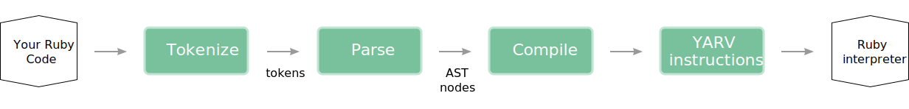

Exploiting Ruby's abstract syntax tree
A love story in 3 chapters
Who am I?
Berlin, Germany
Director of Engineering @ Blacklane
Part of the Reek and RubyCritic core team
Chapter 1
What is an Abstract Syntax Tree?
Or: How does Ruby run your program?
So what happens between...
def foo
puts 'hola!'
end
and
foo() # -> hola!
?
TODO: Naming everything foo and bar sucks, come up with better names that tell a story or at least have some meaning
Stage 1
Tokenization
...is the process of breaking a stream of text into meaningful elements called tokens
Ripper.tokenize "def foo end"
["def", " ", "foo", " ", "end"]
Stage 2
Lexing
...is the process of giving meaning to these tokens
buffer = Parser::Source::Buffer.new('buffer', 1)
buffer.source = "def foo end"
Parser::CurrentRuby.new.tokenize(buffer)
[[:kDEF, ["def", #<Parser::Source::Range 0...3>]],
[:tIDENTIFIER, ["foo", #<Range 4...7>],
[:kEND, ["end", #<Range 8...11>]]]]
Stage 3
Parsing
...is the process of creating an abstract syntax tree out of those tokens
Parser::CurrentRuby.parse "def foo; puts 'hola!' end"
s(:def, :foo,
s(:args),
s(:send, nil, :puts,
s(:str, "hola!")))
Stage 4
Compiling
...is the process of turning this tree into bytecode
RubyVM::InstructionSequence.
compile('def foo; end').
disassemble
putobject :foo\n0008
putiseq foo\n0010
opt_send_without_block ... \n0012
Stage 5
Interpretation
...is the process of running this bytecode in the Ruby VM
putobject :foo\n0008
putiseq foo\n0010
opt_send_without_block ... \n0012
Ruby Interpreter
Quick recap
From source code to execution
Let's revisit Abstract Syntax Trees
A syntax tree consists of nodes and edges
Nodes consist of s-expressions ("symbolic expression")
s-expressions are a notation for nested list (tree-structured) data
s(:send,
s(:int, 1), :+,
s(:begin,
s(:send,
s(:int, 2), :*,
s(:int, 3))))
Why "abstract"?
ASTs don't represent every detail that appears in the real syntax
:foo if :bar # Version 1
if :bar then :foo; end # Version 2
Both versions will result in the same AST
s(:if,
s(:sym, :bar),
s(:sym, :foo), nil)
So why would you care about any of this?
There are a ton of cool things you can only do on an AST
If you understand ASTs you just learned LISP for free
For this talk we'll focus on the "cool things" ®
Chapter 2
Code Smells

Code Smells
A code smell is a hint that something might be wrong, not a certainty
Calling something a code smell is not an attack
No codebase is perfect
There are conceptually simple code smells
# UncommunicativeMethodName / ParameterName
def m(a, b, c, d, e, f) # LongParameterList
# ClassVariable
@@klazzy = 42
call_me(f)
call_me(f) # DuplicateMethodCall
end
But there are also not so obvious, complicated smells
Feature Envy occurs when a code fragment references another object more often than it references itself
class Warehouse
def sale_price(item)
# We refer to one instance variable (ok)
# but call two methods on our
# `item` argument (questionable)
(item.price - item.rebate) * @vat
end
end
Reek is a tool that detects code smells
Running Reek on
class Warehouse
def sale_price(item)
(item.price - item.rebate) * @vat
end
end
How does Reek work?
We use the awesome Parser gem to generate the AST
def syntax_tree
begin
ast, comments = parser.
parse_with_comments(source, origin)
rescue Parser::SyntaxError => error
$stderr.puts "#{origin}: #{error.class.name}: "\
"#{error}"
end
# snip
end
This will return a tree consisting of Parser::AST::Node
We wrap that into a tree of contexts
def build(exp)
context_processor = "process_#{exp.type}"
if context_processor_exists?(context_processor)
send(context_processor, exp)
else
process exp
end
end
def process(exp)
exp.children.grep(AST::Node).each(&method(:build))
end
We then traverse this tree of contexts and run all eligible smell detectors on it
class UncommunicativeParameterName < SmellDetector
def inspect(context)
context.parameter_names.select do |name|
uncommunicative_parameter_name?(name, context)
end.map do |name|
smell_warning("has the parameter name '#{name}'")
# ...snip
end
end
def uncommunicative_parameter_name?(name, context)
!acceptable_name?(name, context) &&
context.uses_param?(name)
end
end
How can you start using Reek?
Use Reek's Rake task to add it to your CI
require 'reek/rake/task'
Reek::Rake::Task.new do |t|
t.fail_on_error = false
end
Add Reek's custom matchers to your RSpec examples
require 'reek'
require 'reek/spec'
require 'rspec'
RSpec.describe 'Reek Integration' do
it 'works with Reek' do
smelly_class = 'class C; def m; end; end'
expect(smelly_class).not_to reek
end
end
Include Reek using the Developer API
require 'reek'
source = <<-EOS
class Dirty
def m(a,b,c)
puts a,b
end
end
EOS
reporter = Reek::Report::TextReport.new
examiner = Reek::Examiner.new source
reporter.add_examiner examiner
reporter.show
Chapter 3
Mutation testing with Mutant
Mutation testing with Mutant
Takes code like this
class Greeter
def initialize(phrase)
@enabled = true
@phrase = phrase
end
def say_hello(options)
"#{@phrase} #{options[:name]}" if @enabled
end
end
And turns it into something like this
if true
"#{@phrase}#{" "}#{options[:name]}"
end
# Was
# "#{@phrase} #{options[:name]}" if @enabled
Or this
if @enabled
"#{@phrase}#{" "}#{options.fetch(:name)}"
end
# Was
# "#{@phrase} #{options[:name]}" if @enabled
Mutant then runs your tests against each mutation
Failing tests kill the mutants
Surviving mutants show a lack of test coverage
How does Mutant work?
Configuration
In the first step Mutant initializes its configuration
module Mutant
class Config
DEFAULT = new(
debug: false,
expected_coverage: Rational(1),
# snip
fail_fast: false,
includes: EMPTY_ARRAY,
# snip
kernel: Kernel,
load_path: $LOAD_PATH,
)
end
end
Environment
An environment is initialized and infected based on the given configuration
module Mutant
class Env
class Bootstrap
def initialize(config)
self.config = config
@parser = Parser.new
infect
initialize_matchable_scopes
end
end
end
end
Subjects
This environment loads the "subjects" - that is the modules you want to mutation test
def initialize_matchable_scopes
scopes = ObjectSpace.each_object(Module)
.each_with_object([])
do |scope, aggregate|
expression = expression(scope) || next
aggregate << Scope.new(scope, expression)
end
end
Subjects consist of your module in question together with one specific node
module Mutant
class Subject
attr_accessor :context, :node
# With node being an AST like this:
# s(:def, :say_hello,
# s(:args,
# ...snip
end
end
Lets contrast this with our example from the beginning
class Greeter # <- The subject
def say_hello(name) # <- The node
"#{@phrase} #{name}" if @enabled
end
end
Mutations
A quick revision of our initial example
def say_hello(name)
"#{@phrase} #{name}" if @enabled
end
@@ -1,6 +1,6 @@
def say_hello(options)
- if @enabled
+ if true
"#{@phrase}#{" "}#{name}"
end
end
Mutant generates those mutations based on the subjects
# Original AST for "#{@phrase} #{name}" if @enabled
s(:dstr,
s(:begin,
s(:ivar, :@phrase))
# Mutation!
# "#{phrase}..." instead of "#{@phrase}..."
s(:dstr,
s(:begin,
s(:send, nil, :phrase))
Another example
# Original
s(:if,
s(:ivar, :@enabled),
s(:dstr,
# The mutation from our initial example!
s(:if,
s(:true),
s(:dstr,
Putting it all together
The environment gets passed to a Runner
The runner then runs our tests against all mutants
class Runner
def initialize(env)
self.env = env
reporter.start(env)
run_mutation_analysis
end
def run_mutation_analysis
@result = run_driver(Parallel.async(test_config))
reporter.report(result)
end
end
How can you start using Mutant?
Include it into your CI
Integrating Mutant into your CI has consequences
Depending on what you do, your CI runs might become really slow
Your CI runs will fail. A lot...
...because Mutant will uncover holes in your test coverage all the time
Wrapping it up
We looked at how Ruby interprets your source code
Talked about abstract syntax trees
Analyzed how Reek uses ASTs to derect code smells
Looked at how mutant creates mutants out of ASTs